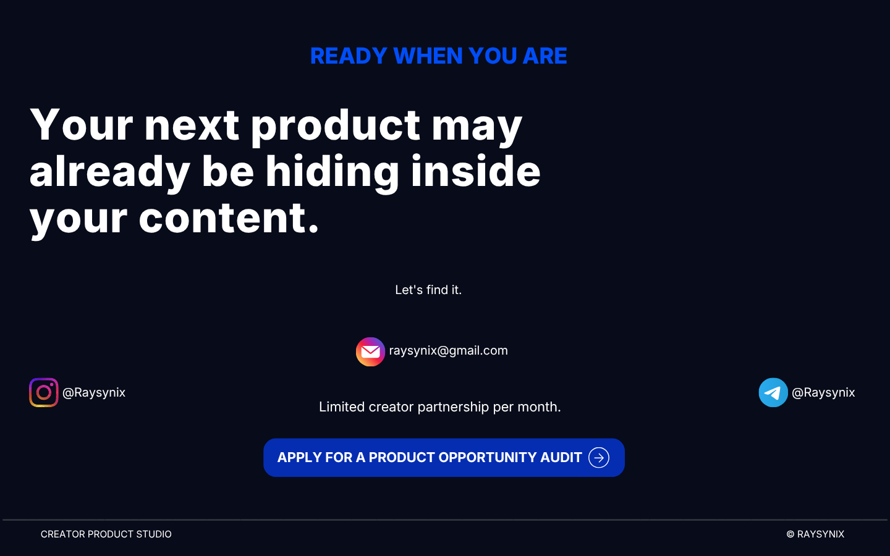

FAQ
We study your content and audience to identify problems people repeatedly want solved, then turn your demonstrated expertise into a creator-native digital product and help take it from product architecture through launch and optimization.
No. The process is designed to identify a product opportunity from your existing content, audience questions, expertise and frameworks, then architect the product around the opportunity we discover.
The intended fit is generally creators with an engaged audience of roughly 10K–100K followers. Engagement, demonstrated expertise and evidence of audience demand matter alongside audience size.
The exact ownership structure is discussed as part of the partnership. The creator contributes expertise, audience, brand and content while the operating side handles the product-development system.
The partnership structure and exact revenue-share terms are discussed during the application process. The core principle is simple: when the product succeeds, both sides benefit.
